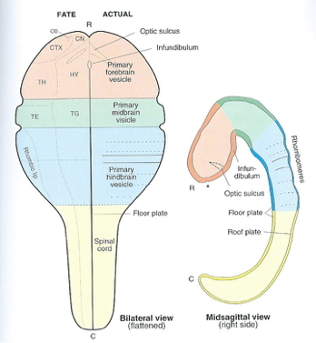
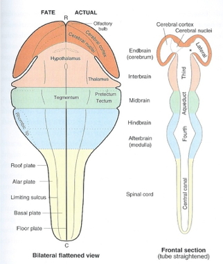

PSY 511
Evolution and development of the human brain
Rick Gilmore
2021-10-08 14:17:08
- Fun
- Evolution
- Human brain development
- Prenatal period
- Differentiation
- Infancy & Early Childhood
- Summary of developmental milestones
- How brain development clarifies anatomical structure
- References
Fun
Evolution
Public acceptance of evolution
![[[@miller2006public]](http://dx.doi.org/10.1126/science.1126746)](https://www.science.org/cms/10.1126/science.1126746/asset/04dcf902-b601-44d0-8a9c-fd7f717b57a3/assets/graphic/765-1.gif)
- In U.S., majority now “accept”
- Increase over last decade
![[[@Miller2021-lb]](http://dx.doi.org/10.1177/09636625211035919)](https://journals-sagepub-com.ezaccess.libraries.psu.edu/na101/home/literatum/publisher/sage/journals/content/pusa/0/pusa.ahead-of-print/09636625211035919/20210815/images/medium/10.1177_09636625211035919-fig1.gif)
Types of evidence
- Fossil
- Fossil dating
- Geological
- Where fossils are found relative to one another
- How long it takes to form layers
- Genetic
- Rates of mutation
- Anatomical
- Homologous structures across species
Nothing in Biology Makes Sense except in the Light of Evolution
“Seen in the light of evolution, biology is, perhaps, intellectually the most satisfying and inspiring science. Without that light, it becomes a pile of sundry facts some of them interesting or curious, but making no meaningful picture as a whole.”
Why Gilmore thinks the theory so controversial (in the U.S.)
- Contradicts verbatim/non-metaphorical reading of some religious texts
- Makes humans seem less special
- Time scales involved beyond human experience
- Scientific method vs. other ways of knowing
- Found in nature ≠ good for human society
- Few negative consequences of ‘disbelief’
- U.S. culture individualistic, skeptical, anti-elitist, anti-intellectual
- Lower levels of religious belief among U.S. scientists
- Politics
- A minority of citizens support teaching evolution-only
- Majority of classroom teachers aren’t strong advocates
A structural equation model indicates that increasing enrollment in baccalaureate-level programs, exposure to college-level science courses, a declining level of religious fundamentalism, and a rising level of civic scientific literacy are responsible for the increased level of public acceptance.
Evolution and development
Ontogenesis and phylogenesis
- Ontogenesis
- Development within lifetimes, history of individuals
- Phylogenesis
- Change across lifestimes, history of species
Ontogeny does not recapitulate phylogeny (Haeckel), but…

Source: Wikipedia
Complex multicellular life emerged “recently”


Nervous system architectures
How nervous systems differ
- Body symmetry
- radial
- bilateral
![Source: [[@arendt_nerve_2016]](https://doi.org/10.1038/nrn.2015.15)](https://media.nature.com/lw926/nature-assets/nrn/journal/v17/n1/images/nrn.2015.15-f1.jpg)
An animal with a nerve “net”
- Segmentation
- Cephalization (concentration of sensory & neural structures in anterior portion of body)
- Encasement in bone (vertebrates)
- Centralized vs. distributed function
Cephalopods have “intelligent arms”
The essentials of biological computation
- Ingestion
- Defense
- Reproduction

Information processing universals
- Sense/detect via sensors
- Specialize by information source/type
- Specialize by target location
- Interoceptive
- Exteroceptive
- Analyze, evaluate, decide
- Current state
- World
- Organism
- Current goals
- Past state(s)
- Current state
- Act
- Move body
- Approach/avoid
- Manipulate
- Ingest
- Signal
- Change physiological state
- Move body
From nerve net to nerve ring, nerve cord, and brain
(Arendt, Tosches, & Marlow, 2016)
![[[@arendt_nerve_2016]](http://doi.org/10.1038/nrn.2015.15)](img/nrn.2015.15-f1.jpg)
![[[@arendt_nerve_2016]](http://doi.org/10.1038/nrn.2015.15)](img/nrn.2015.15-f2.jpg)
- Neurons and nervous systems 520-570 M years old
- Diverse nervous systems show developmental similarities at molecular level
Vertebrate CNS organization
![[[@Northcutt2002-jg]](http://doi.org/10.1093/icb/42.4.743)](img/northcutt-2002-f1.gif)


![[[@Northcutt2002-jg]](http://doi.org/10.1093/icb/42.4.743)](img/northcutt-2002-f2.gif)
- Differences in size of the cerebral cortex
![[[@hofman_evolution_2014]](https://doi.org/10.3389/fnana.2014.00015)](http://www.frontiersin.org/files/Articles/78485/fnana-08-00015-HTML/image_m/fnana-08-00015-g001.jpg)
| Structural measure | Non-human comparison | Human |
|---|---|---|
| Cortical gray matter %/tot brain vol | insectivores 25% | 50% |
| Cortical gray + white | mice 40% | 80% |
| Cerebellar mass | primates, mammals 10-15% | 10-15% |
- Evidence for greater gray and white matter (relative to total brain volume) in human cerebral cortex
![[[@rakic2009evolution]](http://dx.doi.org/10.1038/nrn2719)](http://www.nature.com/nrn/journal/v10/n10/images/nrn2719-f1.jpg)
![[[@hofman_evolution_2014]](https://doi.org/10.3389/fnana.2014.00015)](http://www.frontiersin.org/files/Articles/78485/fnana-08-00015-HTML/image_m/fnana-08-00015-g002.jpg)
Take homes
- Brain sizes scale with body size
- Brain sizes (more or less) scale with animal class (more or less)
Old story
- Within mammals, human brains bigger than expected
- Higher encephalization quotient – deviation from species-typical norm
- Humans have larger cerebral cortical gray + white matter than comparable mammals
vs. New story
- Does brain size/mass matter (that much)?
- “Size matters” (brain mass) presumes similarity among brains at micro-level
- Big (large mass) brains arise in multiple mammalian lineages
![[[@Herculano-Houzel2012-up]](http://doi.org/10.1073/pnas.1201895109)](http://www.pnas.org/content/109/Supplement_1/10661/F1.large.jpg)
- # of cortical neurons more important difference than brain mass
- The primate advantage -> more cortical neurons, but not larger neurons & not more neurons in cerebellum
- Human brain just scaled up (non-ape) primate brain
![[[@Herculano-Houzel2012-up]](http://doi.org/10.1073/pnas.1201895109)](http://www.pnas.org/content/109/Supplement_1/10661/F3.large.jpg)
# of cortical (or in birds, pallidum) neurons predicts “cognition?”
![[[@Herculano-Houzel2017-gf]](http://doi.org/10.1016/j.cobeha.2017.02.004)](https://ars.els-cdn.com/content/image/1-s2.0-S2352154616302637-gr3_lrg.jpg)
The Human Advantage (Herculano-Houzel, 2016)
- Brain
- More neurons in cerebral cortex than other mammals
- Behavior
- Less time spent foraging
- Higher quality/more energetically dense food
- Higher food availability
- Cultural factors (agriculture + cooking), see also (Wrangham, 2009)
- Less time spent foraging
A further human advantage

Human brain development
Prenatal period
Insemination
- 3-4 days before or up to 1-2 days after…
- Ovulation
Fertilization
- Within ~ 24 hrs of ovulation
Implantation
- ~ 6 days after fertilization
Early embryogenesis
Formation of neural tube (neurulation)

- Embryonic layers: ectoderm, mesoderm, endoderm
- ~18-26 days
- Failures of neural tube closure
- Anencephaly (rostral neuraxis)
- Spina bifida (caudal neuraxis)

- Neural tube becomes
- Ventricles & cerebral aqueduct
- Central canal of spinal cord

Neurogenesis and gliogenesis
- Neuroepithelium cell layer lines neural tube
- Peri-ventricular regions remain home to cells that can produce new cells
![[[@Gotz2005-yj]](https://doi.org/10.1038/nrm1739)](https://media.springernature.com/full/springer-static/image/art%3A10.1038%2Fnrm1739/MediaObjects/41580_2005_Article_BFnrm1739_Fig1_HTML.jpg?as=webp)
The lineage trees shown provide a simplified view of the relationship between neuroepithelial cells (NE), radial glial cells (RG) and neurons (N), without (a) and with (b) basal progenitors (BP) as cellular intermediates in the generation of neurons. They also show the types of cell division involved.
- Areas in adult human brain that generate new neurons
- hippocampus
- striatum
- olfactory bulb (minimally)
- weak evidence for neurogenesis in adult cerebral cortex
- Neural stem cells
- Undergo symmetric & asymmetric cell division
- Generate glia, neurons, and basal progenitor cells
Radial glia and cell migration


Radial unit hypothesis
![[[@rakic2009evolution]](http://dx.doi.org/10.1038/nrn2719)](http://www.nature.com/nrn/journal/v10/n10/images/nrn2719-f2.jpg)
Axon growth cone
- Chemoattractants
- e.g., Nerve Growth Factor (NGF)
- Chemorepellents
- Receptors in growth cone detect chemical gradients
Glia migrate, too
![[[@Baumann2001-nw]](http://dx.doi.org/10.1152/physrev.2001.81.2.871)](https://www.physiology.org/na101/home/literatum/publisher/physio/journals/content/physrev/2001/physrev.2001.81.issue-2/physrev.2001.81.2.871/production/images/medium/9j0210133004.jpeg)
Differentiation
- Neuron vs. glial cell
- Cell type
- myelin-producing vs. astrocyte vs. microglia
- pyramidal cell vs. stellate vs. Purkinje vs. …
- NTs released
- Where to connect
Infancy & Early Childhood
Synaptogenesis

Proliferation, pruning
- Early proliferation
- Later pruning
- Rates, peaks differ by area
Apoptosis
- Programmed cell death
- 20-80%, varies by area
- Spinal cord >> cortex
- Quantity of nerve growth factors (NGF) influences
![[[@rakic2009evolution]](http://dx.doi.org/10.1038/nrn2719)](http://www.nature.com/nrn/journal/v10/n10/images/nrn2719-f3.jpg)
Synaptic rearrangement

- Progressive phase: growth rate >> loss rate
- Regressive phase: growth rate << loss rate
Myelination
![[[@Baumann2001-nw]](http://dx.doi.org/10.1152/physrev.2001.81.2.871)](https://www.physiology.org/na101/home/literatum/publisher/physio/journals/content/physrev/2001/physrev.2001.81.issue-2/physrev.2001.81.2.871/production/images/medium/9j0210133006.jpeg)
- Neonatal brain largely unmyelinated
- Gradual myelination, peaks in mid-20s
- Non-uniform pattern
- Spinal cord before brain
- Sensory before motor
Gyral development
![[[@Chi1977-hm]](http://doi.org/10.1002/ana.410010109)](img/chi-77-1.jpg)
![[[@Chi1977-hm]](http://doi.org/10.1002/ana.410010109)](img/chi-77-3.jpg)
![[[@Chi1977-hm]](http://doi.org/10.1002/ana.410010109)](img/chi-77-4.jpg)
Structural/morphometric development

Synaptogenesis
Myelination across human development
![[[@Hagmann02112010]](http://doi.org/10.1073/pnas.1009073107)](http://www.pnas.org/content/107/44/19067/F1.medium.gif)
Networks in the brain
![[[@irimia_2014]](http://doi.org/10.3389/fnhum.2014.00051)](https://pressroom.usc.edu/files/2014/02/brain-networks.jpg)
- Age-related functional connectivity increases within visual-related areas (Petrican, Taylor, & Grady, 2017)
![[[@Petrican2017-re]](http://doi.org/10.1016/j.neuroimage.2017.09.025)](https://ars.els-cdn.com/content/image/1-s2.0-S1053811917307735-gr2a_lrg.jpg)
“Control” networks
non-“control” networks
![[[@Petrican2017-re]](http://doi.org/10.1016/j.neuroimage.2017.09.025)](https://ars.els-cdn.com/content/image/1-s2.0-S1053811917307735-gr2c_lrg.jpg)
The “development” of developmental connectomics
![[[@Cao2017-bl]](http://doi.org/10.1016/j.tins.2017.06.003)](https://ars.els-cdn.com/content/image/1-s2.0-S0166223617301157-gr2_lrg.jpg)
Myelination changes “network” properties
![[[@Hagmann02112010]](http://doi.org/10.1073/pnas.1009073107)](http://www.pnas.org/content/107/44/19067/F2.medium.gif)
Synaptic rearrangment, myelination change cortical thickness
- Cortical thickness changes (Gogtay et al., 2004)
![[[@Shaw2008-dq]](https://doi.org/10.1523/JNEUROSCI.5309-07.2008)](http://www.jneurosci.org/content/jneuro/28/14/3586/F1.large.jpg)
![[[@Shaw2008-dq]](https://doi.org/10.1523/JNEUROSCI.5309-07.2008)](http://www.jneurosci.org/content/jneuro/28/14/3586/F2.large.jpg)
![[[@Shaw2008-dq]](https://doi.org/10.1523/JNEUROSCI.5309-07.2008)](http://www.jneurosci.org/content/jneuro/28/14/3586/F3.large.jpg)
![[[@Shaw2008-dq]](https://doi.org/10.1523/JNEUROSCI.5309-07.2008)](http://www.jneurosci.org/content/jneuro/28/14/3586/F4.large.jpg)
Video depictions
Right hemisphere
Left hemisphere
Superior
Inferior
```Changes in brain energetics (glucose utilization)
![[[@Kuzawa2014-qd]](http://doi.org/10.1073/pnas.1323099111)](http://www.pnas.org/content/111/36/13010/F1.medium.gif)
Gene expression across development
![[[@Kang2011-ex]](http://doi.org/10.1038/nature10523)](https://media.springernature.com/full/springer-static/image/art%3A10.1038%2Fnature10523/MediaObjects/41586_2011_Article_BFnature10523_Fig5_HTML.jpg?as=webp)
a, Comparison between DCX expression in HIP and the density of DCX-immunopositive cells in the human dentate gyrus36. b, Comparison between transcriptome-based dendrite development trajectory in DFC and Golgi-method-based growth of basal dendrites of layer 3 (L3) and 5 (L5) pyramidal neurons in the human DFC41. c, Comparison between transcriptome-based synapse development trajectory in DFC and density of DFC synapses calculated using electron microscopy42. For b and c, PC1 for gene expression was plotted against age to represent the developmental trajectory of genes associated with dendrite (b) or synapse (c) development. Independent data sets were centred, scaled and plotted on a logarithmic scale. d, PC1 value for the indicated sets of genes (expressed as percentage of maximum) plotted against age to represent general trends and regional differences in several neurodevelopmental processes in NCX, HIP and CBC.
Summary of developmental milestones
Prenatal
- Neuro- and gliogenesis
- Migration
- Synaptogenesis begins
- Differentiation
- Apoptosis
- Myelination begins
- Infant gene expression ≠ Adult
Postnatal
- Synaptogenesis
- Cortical expansion, activity-dependent change
- Then cubic, quadratic, or linear declines in cortical thickness
- Myelination
- Connectivity changes (esp within networks)
- Prolonged period of postnatal/pre-reproductive development (Konner, 2011)
How brain development clarifies anatomical structure
3-4 weeks

Source: Swanson

~4 weeks

6 weeks


Beyond 6+ weeks

Organization of the brain
| Major division | Ventricular Landmark | Embryonic Division | Structure |
|---|---|---|---|
| Forebrain | Lateral | Telencephalon | Cerebral cortex |
| Basal ganglia | |||
| Hippocampus, amygdala | |||
| Third | Diencephalon | Thalamus | |
| Hypothalamus | |||
| Midbrain | Cerebral Aqueduct | Mesencephalon | Tectum, tegmentum |
| Hindbrain | 4th | Metencephalon | Cerebellum, pons |
| – | Mylencephalon | Medulla oblongata |
From structural development to functional development
![[[@Johnson2001-yy]](http://doi.org/10.1038/35081509)](https://media.springernature.com/full/springer-static/image/art%3A10.1038%2F35081509/MediaObjects/41583_2001_Article_BF35081509_Fig3_HTML.gif?as=webp)
Figure 3: Three accounts of the neural basis of an advance in behavioural abilities in infants. a | A maturational view in which the neuroanatomical maturation of one region, in this case the dorsolateral prefrontal cortex (DLPC), allows new behavioural abilities to emerge. Specifically, maturation of DLPC has been associated with successful performance in the object retrieval task (Fig. 1a)50. Note that although the task itself involves activity in several regions, it is thought to be maturation of only one of these, the DLPC, that results in changed behaviour. b | An interactive specialization view in which the onset of a new behavioural ability is due to changes in the interactions between several regions that were already partially active. In this hypothetical illustration, it is suggested that changes in the interactions between DLPC, parietal cortex and cerebellum might give rise to successful performance in the object retrieval paradigm. In contrast to the maturational view, it is refinement of the connectivity between regions, rather than within a single region, that is important. According to this view, regions adjust their functionality together to allow new computations. c | A skill-learning model, in which the pattern of activation of cortical regions changes during the acquisition of new skills throughout the lifespan. In the example illustrated there is decreasing activation of DLPC and medial frontal cortex (pre-supplementary motor area), accompanied by increasing activation of more posterior regions (such as intraparietal sulcus), as human adults perform a visuomotor sequence learning task77. It is suggested that similar changes might occur during the acquisition of new skills by infants. These three accounts are not necessarily mutually exclusive. (Johnson, 2001)